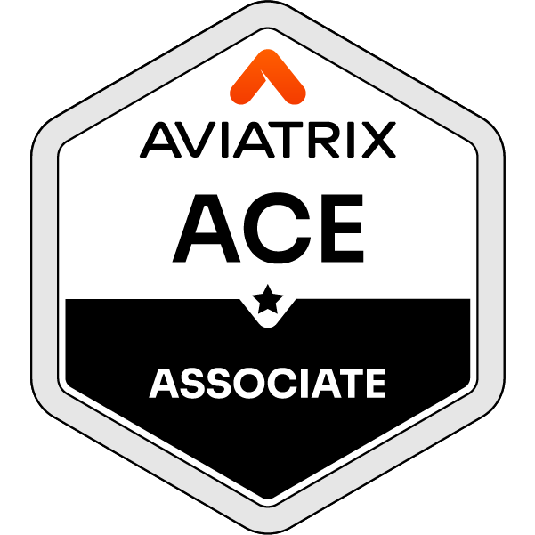
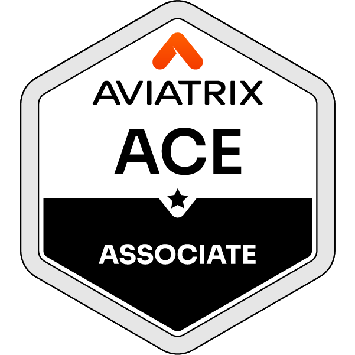

About — short summary
Location: Philippines
Experience: Since 2019
Experience: Since 2019
Professional Experience
IT System and Network Administrator | Ever Succeeded Global Ltd.
2024 — Present
- Provided IT support from L1 to L3, addressing a wide range of technical issues from basic troubleshooting to advanced system and network escalations. Ensured quick resolution of incidents, root cause analysis, and knowledge transfer to strengthen IT operations..
- Managed enterprise networks, servers, firewalls, and wireless systems to ensure uptime and reliability.
- Deployed and maintained cloud-based applications and services, supporting business continuity.
- Implemented data backup, disaster recovery, and security measures to protect mission-critical information.
- Monitored threats with Fortinet and MISP, applying patches and incident response procedures.
- Manage AWS and Azure Virtual Machines (VMs), handling deployment, configuration, monitoring, and maintenance to ensure optimal performance and security. This includes setting up virtual environments for various applications, managing resource allocation, implementing backup and recovery solutions, and maintaining system uptime across both cloud platforms.
- Experienced in hardware and software troubleshooting, including printer maintenance and repair. Skilled in managing IT operations using a ticketing system by Odoo, monitoring network performance through PRTG and Fortinet Dashboard, and implementing secure authentication by configuring a RADIUS server.
- Configured secure VPNs and remote access solutions for staff and partners.
- Skilled in monitoring network activity and security logs to proactively detect threats, ensure data integrity, and maintain a reliable and seamless network infrastructure.
Data and Voice Communication Specialist | Network Administrator — Central Bicol State University of Agriculture (CBSUA)
2023 — 2024
- Handled network designing, configuring, and maintaining LAN/WAN infrastructures, VLANs, routing protocols, and switch/firewall setups. Ensured high availability, reduced downtime, and optimized overall.
- Provided IT support from L1 to L3, addressing a wide range of technical issues from basic troubleshooting to advanced system and network escalations. Ensured quick resolution of incidents, root cause analysis, and knowledge transfer to strengthen IT operations..
- Experienced in hardware and software troubleshooting, including printer maintenance and repair. Skilled in managing IT operations using a ticketing system (GLP), monitoring network performance through PRTG and Fortinet Dashboard, and implementing secure authentication by configuring a RADIUS server.
- Skilled in monitoring network activity and security logs to proactively detect threats, ensure data integrity, and maintain a reliable and seamless network infrastructure.
- I managed Azure Active Directory (Azure AD) by handling hybrid identity synchronization with on-premises Active Directory, configuring Single Sign-On (SSO), and maintaining user roles, permissions, and access policies. I also configured and managed Azure Virtual Networks (VNets), subnets, and Network Security Groups (NSGs) to control inbound and outbound traffic, ensuring secure and efficient network operations. Additionally, I integrated Azure services with Fortinet Firewall to enable secure VPN access and support hybrid cloud environments, maintaining seamless and protected connectivity between on-premise servers and cloud resources.
IT Specialist — Department of Education (DepEd), Camarines Sur
2019 - 2023
- I developed and published an innovative research platform called E-Saliksik, a digital research portal designed to support academic innovation and collaboration. This platform allows teachers to create, publish, and store research papers, serving as a centralized digital library for both current and past studies. Additionally, E-Saliksik includes a verification and approval feature, enabling the Schools Division Superintendent to authenticate and approve submitted research, ensuring that all published works are credible, verified, and properly documented within the system.
- I administered Microsoft 365 user accounts, managing and optimizing licenses through the Admin Center while configuring appropriate roles and permissions. I also utilized Power Automate and PowerShell to streamline administrative processes, automating tasks such as bulk user provisioning, mailbox configurations, and report generation. Additionally, I managed Teams and SharePoint environments by organizing channels and sites, setting access permissions, and ensuring secure and compliant collaboration across the organization.
- Skilled in monitoring network activity and security logs to proactively detect threats, ensure data integrity, and maintain a reliable and seamless network infrastructure.
- I have extensive experience in hardware and software troubleshooting, including printer maintenance and repair, ensuring reliable operation of IT assets. I effectively manage IT operations through the Odoo ticketing system, while continuously monitoring network performance using PRTG and the Fortinet Dashboard to maintain system stability and security..
- During the pandemic, I was also involved in broadcast live streaming, utilizing tools such as vMix, Streamlabs, and OBS Studio for online events and webinars. In addition, I conducted seminars and training sessions focused on computer troubleshooting, basic networking, and cybersecurity awareness, helping users and students enhance their technical knowledge.
Selected Projects
Odoo Ticketing + Automation
Designed and deployed an Odoo‑based ticketing workflow for IT incidents; integrated into monitoring pipelines and automated routine tasks with PowerShell scripts.
MISP Threat Intelligence Server
Deployed MISP for threat intelligence collection and correlation. Configured feeds and integrated with internal network monitoring.
PRTG Monitoring & NOC Dashboard
Built PRTG dashboards and alerts for network health, uptime and performance metrics; escalations and runbooks for incidents.
Live Streaming & Media Production
Produced and edited streams, lower thirds, teasers and promotional assets during COVID remote learning initiatives.
Skills & Tools
Networking
Firewall / SD‑WAN
VPN / Remote Access
Monitoring & Automation
PRTG / NOC
Powershell Automation
Security & Tools
MISP / Threat Intel
Html, CSS, Java, Python, C++, C, Php, SQL
Other
Video & Photo Editing
Education
BS Computer Engineering — System Technology Institute, Naga City
Continuing: Masters of Disaster Risk Management — Central Bicol State University of Agriculture
Certifications and Training

 
